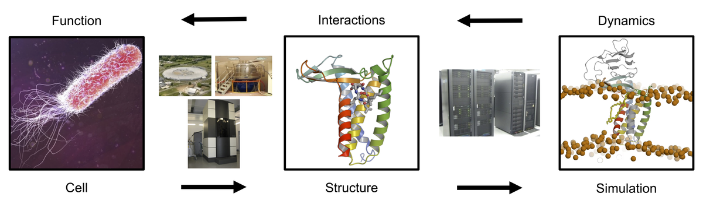
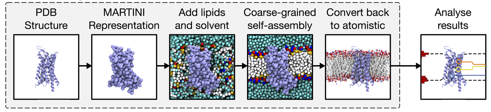
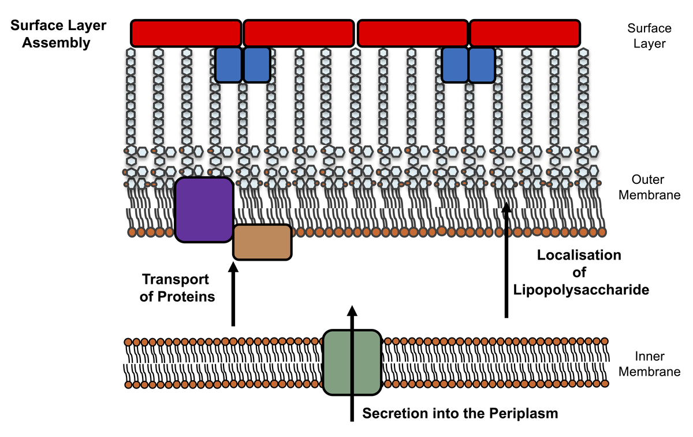

Thank you for visiting the Stansfeld Research Group’s website.
We are studying one of the fundamental challenges in biological sciences: to visualise biomolecular machines in high-resolution detail. This is notoriously difficult, expensive and time-consuming to achieve by using experimental techniques, especially for proteins that exist in cell membranes, known as Integral membrane proteins (IMPs). These proteins play fundamental roles in cell biology e.g. as processing enzymes, ion channels, drug receptors, and solute transporters.

The Stansfeld group uses computational methods to study IMP structures, in particular we use multi-scale molecular dynamics (MD) simulations to permit the accurate assembly of an IMP into a membrane at the coarse-grain level, prior to careful assessment of the quality of the IMP structure at atomic resolution. This workflow forms a springboard to studying the dynamics of experimentally solved structures through MD simulations.

With the increasing threat of anti-microbial resistance, we are especially interested in bacterial IMPs. Knowledge of the three-dimensional structures of proteins involved in essential processes provides the physical details of potentially viable targets for killing drug-resistant, pathogenic bacteria. By breathing life into these frozen structures we may assess the association of proteins with lipids, drug molecules and other components of the protein complexes.

We also maintain a pipeline for inserting experimentally-solved IMP structures into their native bilayer environment, MemProtMD. This pipeline permits the analysis of stability, dynamics and resultant lipid interactions with the experimentally determined IMP structures.